(version 2.6)
iGrOw is a program packed in a html-document that calculates the groundwater flow in the top layer to an open water ditch in a vertical cross section. Assuming symmetry between two ditches as in the figure below, it actually caclultes on the left halve of the part between the ditches and the right part of the ditch on the left:
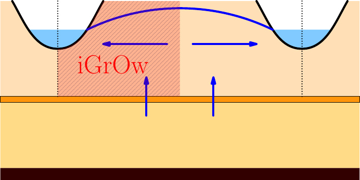
It is important to remember that iGrOw considers and calculates only that halve: so when the value of the width of the ditch is required as input parameter, halve of the total width should be given, and when iGrOw produces the groundwater flux to the ditch, it is the flux through the dashed area in the figure above, so only halve of the total fluxes from the left and the right that end up in the total ditch.
iGrOw is a program packed in a html-document. As output the program produces in the browser where it is opened three views (positioned vertically underneath each other, so the vertical scroll bar has to be used to go from one to the other), illustrated by in the picture below:
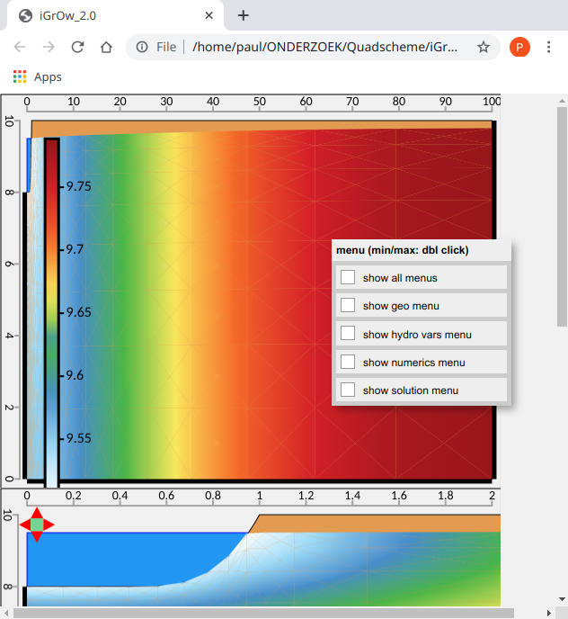 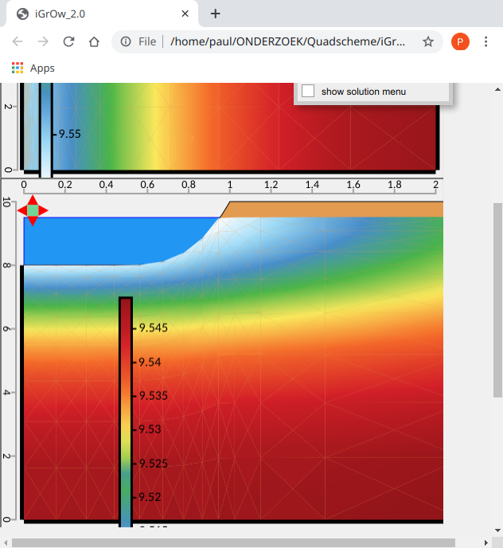 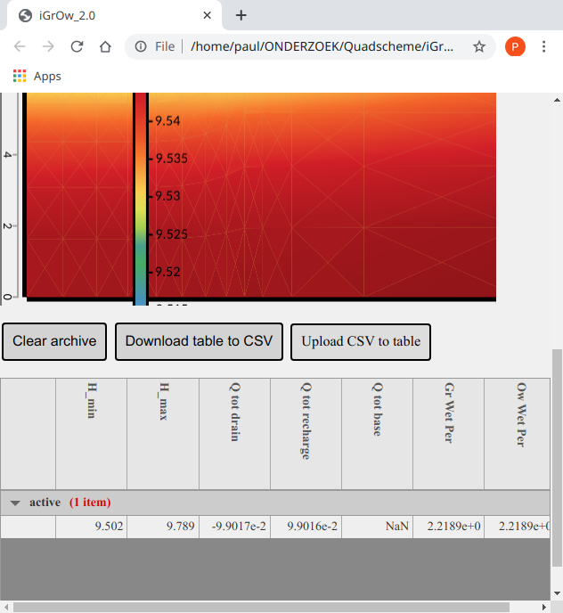
a global view: showing the total system from the water divide on the left to the water divide
a local view: showing the system near the open water on the left
a number view: interesting input and output numbers are combined in a table.
Moreover iGrOw uses six graphical menus as interface.
Extract all the files of iGrOw.zip into one folder. The content of the folder should look like in the following figure:
iGrOw.html: the application itself
scripts: folder containing javascript sources to be used by iGrOw.html. Only if one is interested in the code one should open this folder.
CSV: folder containing helping examples for uploading cases. The uses of the files in this folder will be explained later.
iGrOw_Manual.html: short manual explaining the use of the application iGrOw.html, this is what you are reading now.
Manual_Images: images used in this manual
Both files iGrOwManual.html and iGrOw.html can be opened with almost all browsers. You succeeded opening the first one, otherwise you would not be reading this.
Opening iGrOw.html shows a screen as in the following figure:
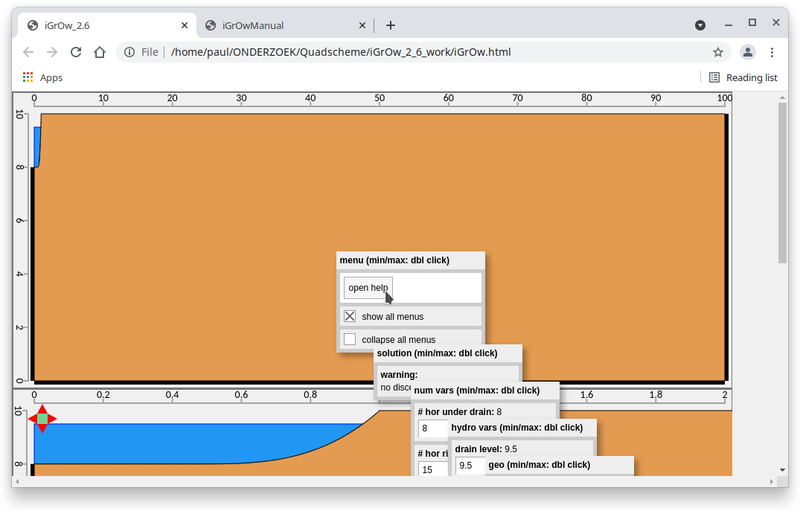It may be useful to open this manual in a second tab of the browser, as illustrated in the figure above. Clicking on the “open help” button in the menu does exactly that.
Only part of the graphs can be seen in the window, as the vertical scroll bar suggests.
To get a fast first impression:
The size of the graphs presented adjust them self to the size of the browser window. If one does change the size of the browser window one can force this adjustment by hitting the “reload” button (may differ between browsers) as in the following figure:
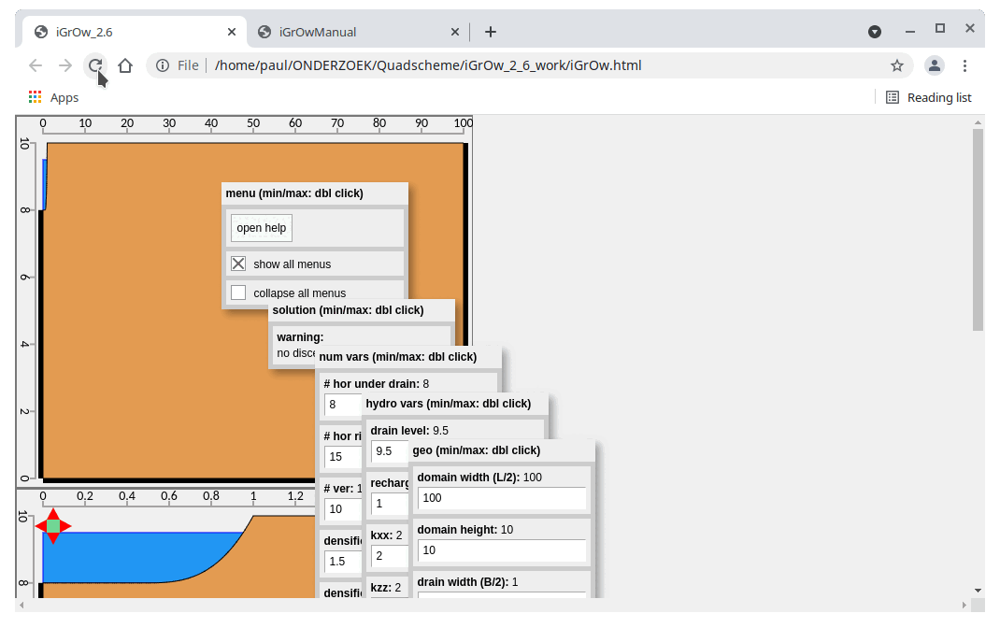Reloading the “iGrOw.html” however undoes all settings and calculations.
The interface of iGrOW is strongly interactive. Several menus make this possible. As the program opens, all of these menus are open. One can however close these menus, and open the ones of choice, as shown by: 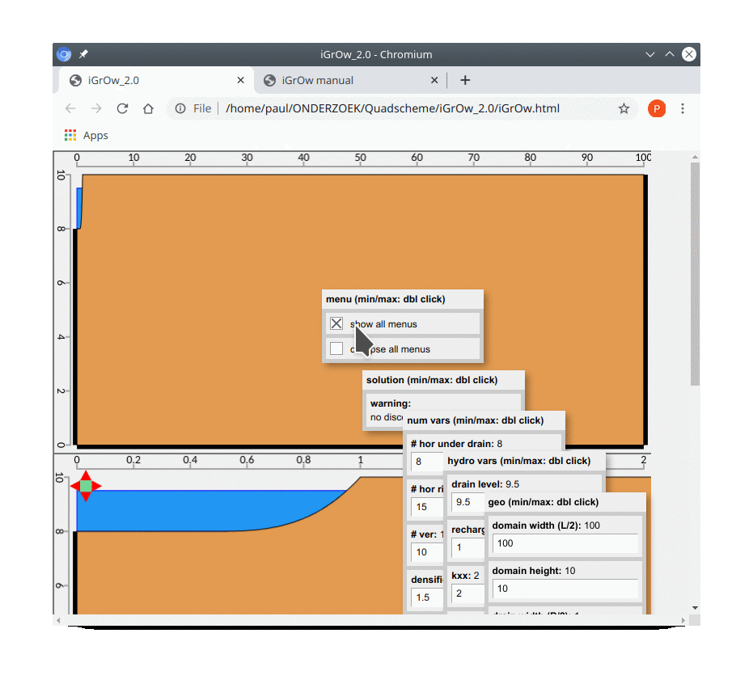
Moreover, these menus can be dragged to an arbitrary postion. By double clicking on the top, a menu changes from minimized to full and back again.
The local view of the systems opens with a preselected width and the total depth. The cross-like symbol on the left top (which can be dragged to any position) allows the user to change this:
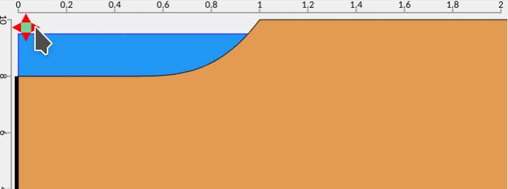clicking on the red triangles pointing to the left and right increases and decreases the width of this view
clicking on the red triangles pointing to up and down changes the vertical selection
clicking on the green square in the middle goes back to the original preselection
The geomenu collects all the settings of parameters that have a pure geometrical meaning.
In principle the user can choose any unit for these parameters, but in all the examples that follow it is assumed that the values are given in [m].
Opening the “geo”-menu is done by checking the first box of the main menu. Unchecking it removes this menu from the window. When checked, a new menu (that can also be dragged, minimized and maximized) appears in the window showing the geometrical variables whose values can be changed through this menu, as is shown in the following figure:
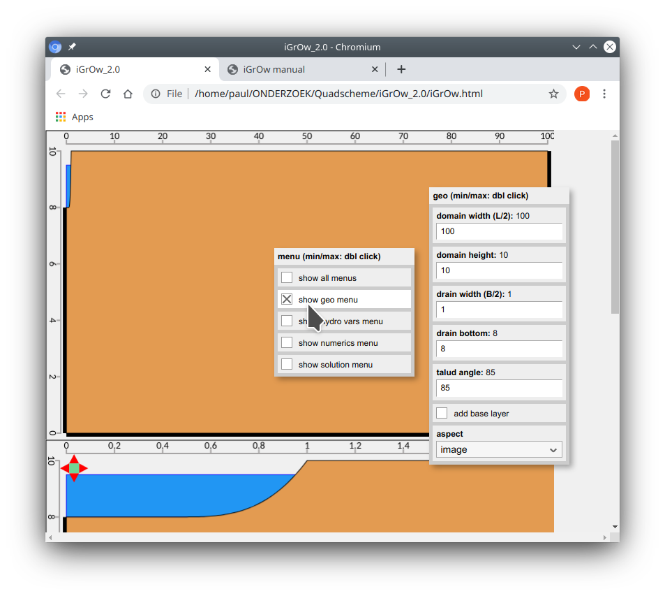The following figure clarifies the meaning of the 5 first values in this menu.
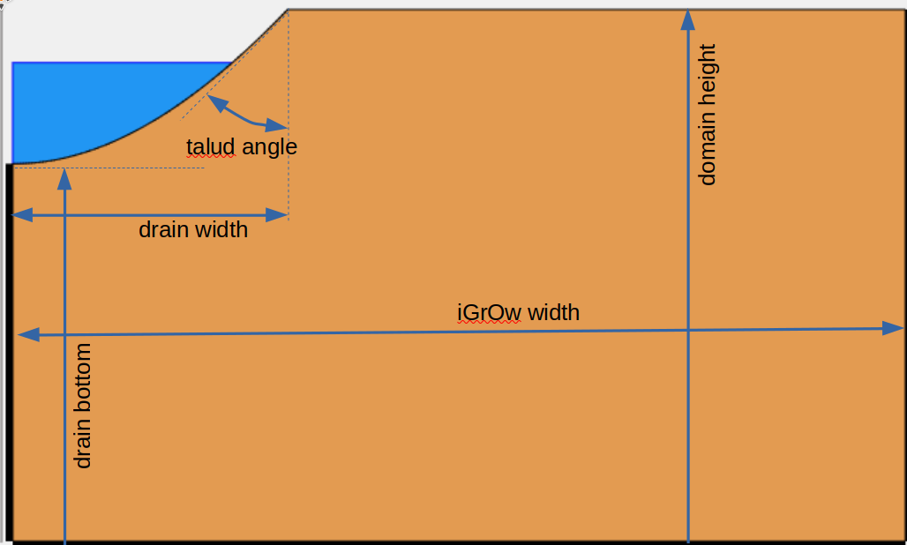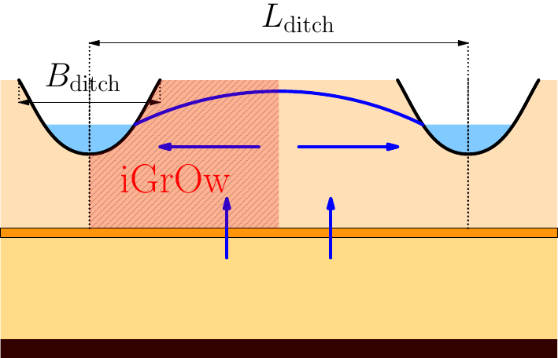
Changing a value in this geo-menu has an immediate effect on all plots in the window as can be seen in the following picture:
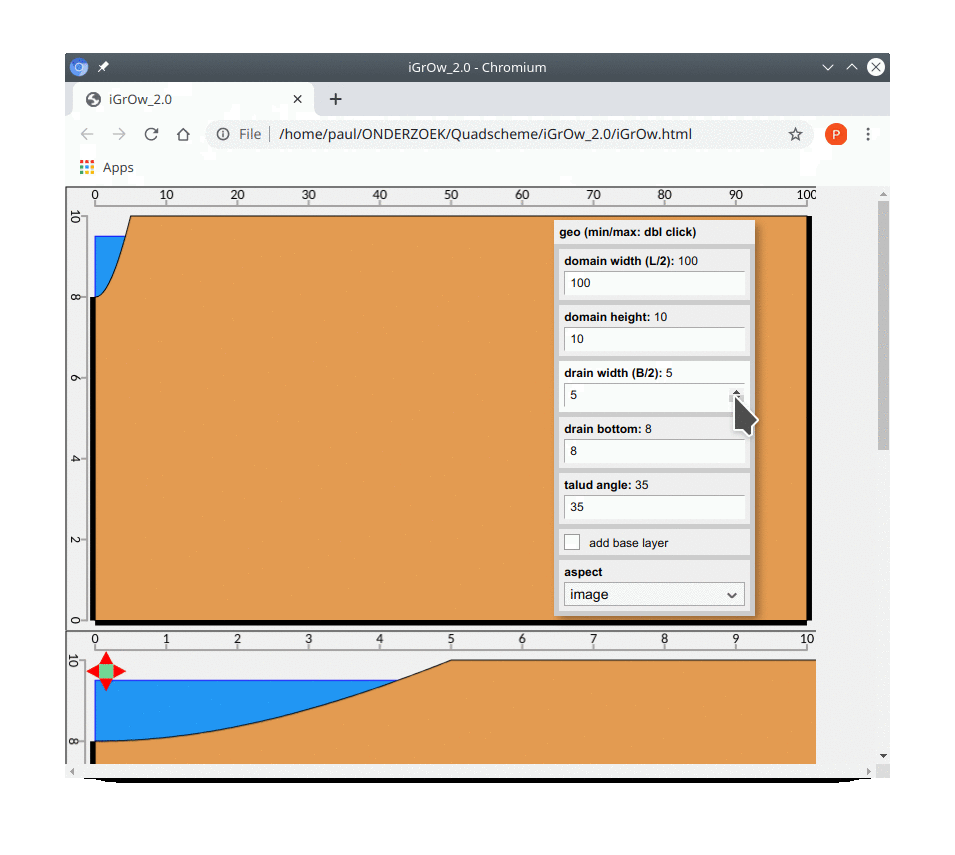All these values have preset minimum and maximum values (set in the script “iGrOwmenu.js”). There are also relations between the settings that need to be satisfied. For instance, the drain bottom should never be higher than the domain height. The user is warned if he nevertheless tries to do this. So if one wants to lower the domain height and the drain bottom in such a way that the new domain height is below the current drain bottom, one should first lower the drain bottom to avoid this type of conflicts.
The bed form of the drain is a smooth curve determined by three parameters: bottom height, width and angle, as illustrated in the following figure:
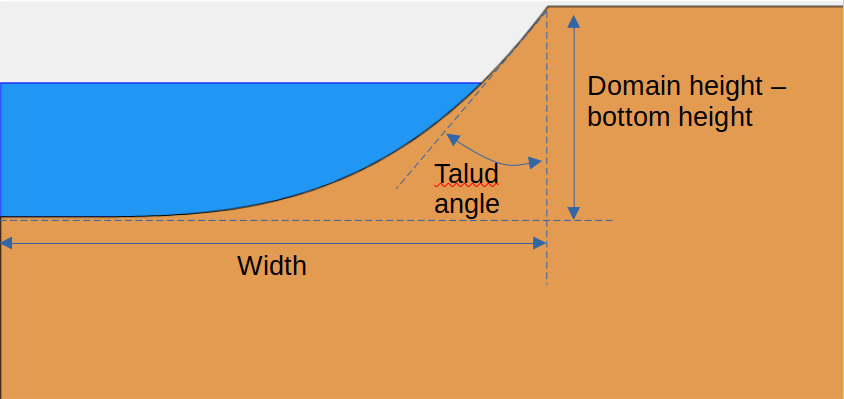uniquely defined by:
The following figure shows 3 of such splines.

The figure above shows that if we choose too far to the left, the resulting spline takes values below the drain bottom, which is unwanted. For values at the right, as e.g. this is no longer the case. iGrOw chooses the smallest value for which the spline does not give values below the drain bottom.
In the sections above the geometrical input variables were discussed. iGrOw also calculates geometrical variables derived from these. They are stored in the table part of the output. The following two variables are calculated:
The second to last button in the geo-menu “add base layer” changes the system to solve.
If checked, extra input fields appear in the hydro-vars-menu (see the relevant section ).
The graphs shown have different x-axis and y-axis scales, chosen such as to fill the available space in the window. In the menu, this is called the “image” aspect. Plotting under this aspect does not preserve orthogonality. By choosing the “physical” aspect an x over y = 1 aspect is used for plotting. The difference between image and the physical aspect is usually much larger for the top graph, shown here in the image below:
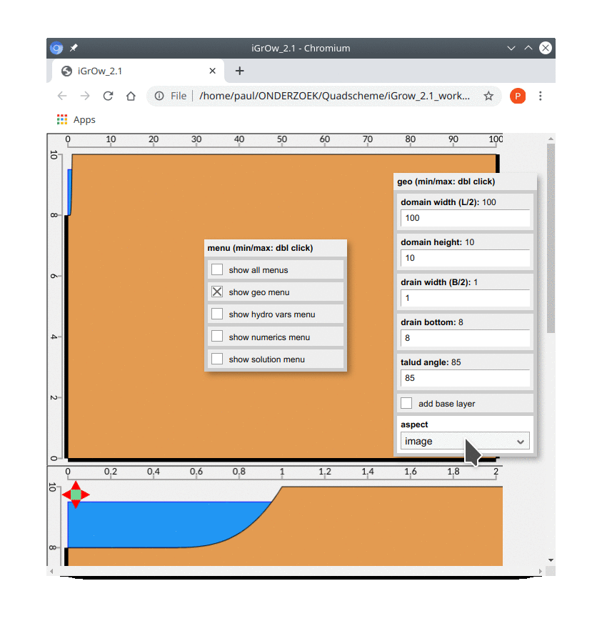The “physical” aspect plot the true curvatures and angles, orthogonality correctly presented. That in contrast with the “image” aspect curvatures and angles are not represented according to their true physical values.
The local view is excluded from this aspect change, as it has its own re-scaling methods (see section).
In this section the physical variables needed as input are discussed. The physical variables calculation will be discussed in the analyzing the solution section.
The hydro vars menu (appears if second box in main menu is checked, again: can be dragged to any place in the window, minimized and maximized by double-clicking) allows the user to set value for physical variables. The precise role of these variables is explained in the equations section. The two drain resistance parameters (c_drain and c_seepage) will be explained in the next section.
The parameters in this menu also involve time. In principle the user can choose any time unit, but in all examples that follow this time unit is [day].
Changing the drain level gives immediate changes in the graphs. Changes of the other values will only become visible through their effects on the solution. Note that the recharge input value will be divided by 1000 when used in the calculations (so that with the choice of [m] for length en [day] for time, the unit of this field is [mm/day]).
The following figure shows this menu: 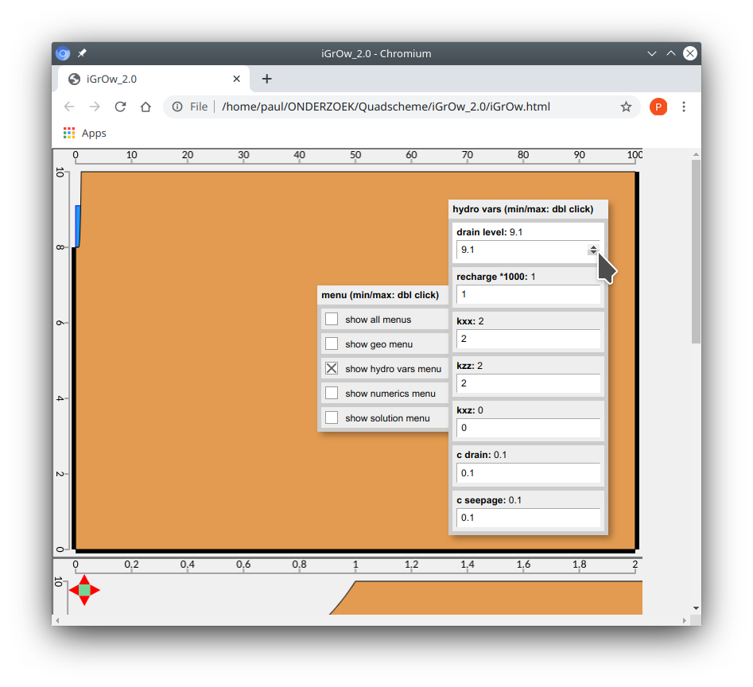
The horizontal conductivity is given by , the vertical by (and should be non-zero if a tensor is to be used, see section). With the standard choice of units, these parameters are in [m/day].
When one the option add lower boundary layer was chosen in the geo-menu, two new fields are added to this menu to be used to calculate the fluxes over this lower boundary, as in the following figure:
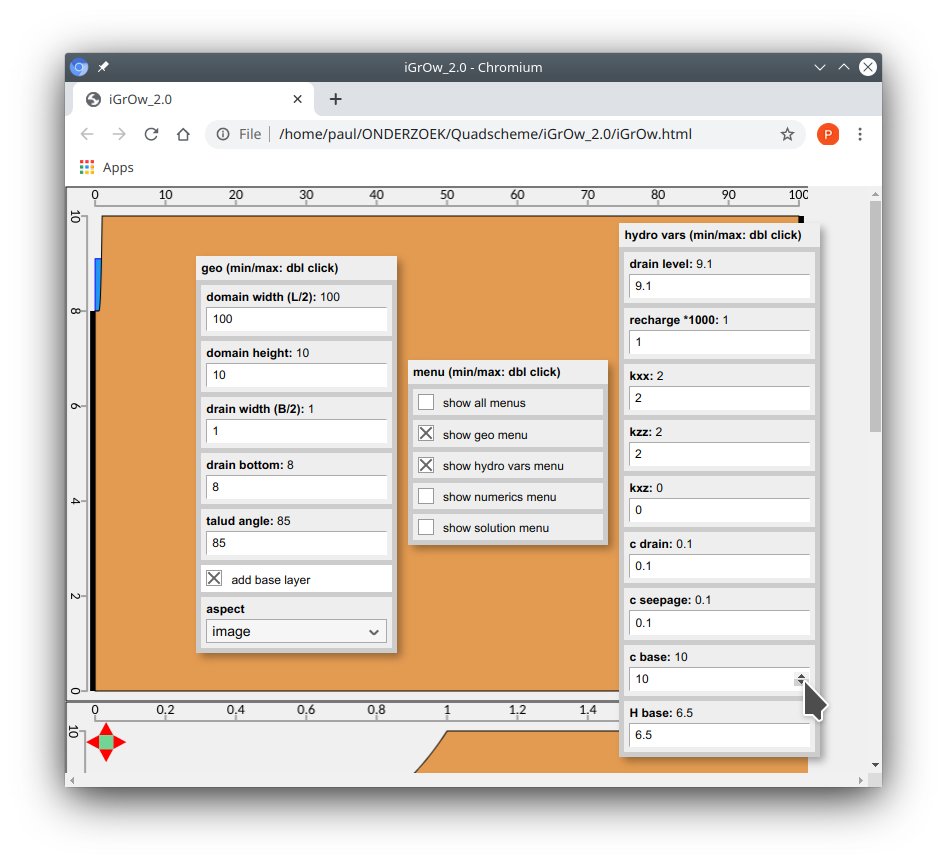The resistance of the groundwater flow to the drain is determined by two parameters: c_drain and c_seepage.
Resistances have the dimensions of time, so with the standard choice of unit these should be given in [day].
This resistance is depth dependent
below the water level the resistance is linearly interpolated between the values c_drain and c_seepage
above the water level, the resistance is constant and equals c_seepage
It is clear that one should have c_seepage c_drain, equality occuring when the resistance is constant over depth.
The following figure illustrates this depth relation:
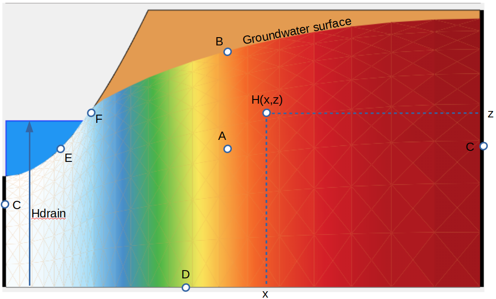
The problem to solve is to calculate for each point below the groundwater surface the groundwater head . In the figure above the variation of is indicated by colors.
Calculating the position of the groundwater surface is part of the problem to be solved. The groundwater surface consists of the points for which the following equation holds:
The flux is calculated by:
The mass balance equation is in each point given by:
The external flux has different expressions on different parts of the domain:
in a point in the interior of the domain the external flux is not present:
in a point on the groundwater surface not in direct contact with the drain (so the whole groundwater table to the left of the point in the figure), the external flux is given by the recharge intensity :
the left and right boundaries are considered as water divides, so no water enters or leaves the system there so that for a point :
At a point on the lower boundary, two choices are possible:
at points as where the system is contact with the water in the drain (with constant head and resistance the flux is given by:
for see the section on outflow resistance
at points as where the system is contact with the atmosphere the flux is given by:
As the equations can not be solved analytically, a numerical solution will be calculated. The first step in this procedure is make a discretization of space. A finite number of nodes will be placed in the domain, and only in these nodes an approximation to the 's will be calculated. As the solution will show dramatically different variations throughout the solution domain, with very horizontal flow on the right and with strongly curved flow near the bottom of the drain. A critical point is thus the rightmost point of the drain. A uniform discretization would require an extremely large number of nodes. Therefor a non-uniform discretization is implemented. The following figure shows the parameters determining such a discretization as can be set through the numerical vars menu:
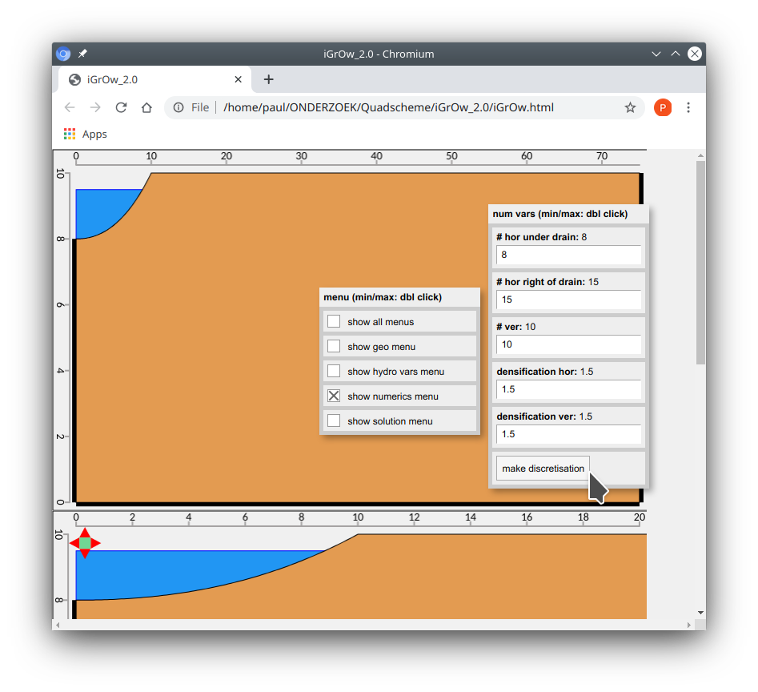The discretization nodes will be generated on a regular grid of straight vertical lines and curved horizontal ones. Initially this grid will fill the total below-ground space. The grid is adaptive: it will adjust itself to the solution such that the grid only fills that part of the domain beneath the groundwater surface. This will be done in such a way that they stay on their original vertical line, to the top will be on the groundwater surface and the nodes on each vertical will keep their relative distances.
As the nodes are positioned on a grid, a discretization is specified by giving horizontal and vertical information:
“#hor under drain”: the number of vertical lines of nodes underneath the drain level
“#hor right of drain”: the number of vertical lines of nodes on the right hand side of the drain level
“densification hor”: the larger this number, the more the vertical lines cluster around the right most point of the drain (and thus the less uniform the discretization is), see also the last figure of this section.
“densification ver”: the larger this number, the more the nodes cluster at the top (and thus the less uniform the discretization is), see also last figure of this section.
Once a discretization is made with the chosen parameters by clicking the “make discretization” button, two new fields appear in the menu allowing the user to inspect the nodes and the cells, as shown in the following two figures:
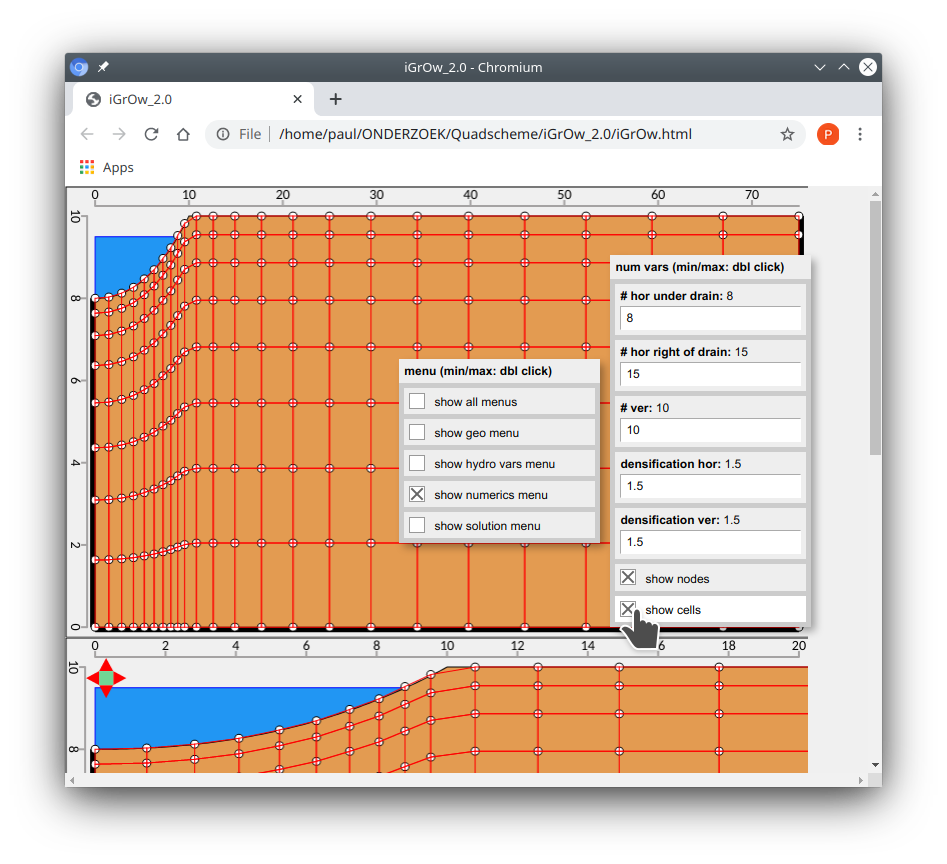
The example of these figures also show that the non-uniformity is such that both views are needed to inspect a typical discretization.
The following figure shows the result of a different choice of densification:
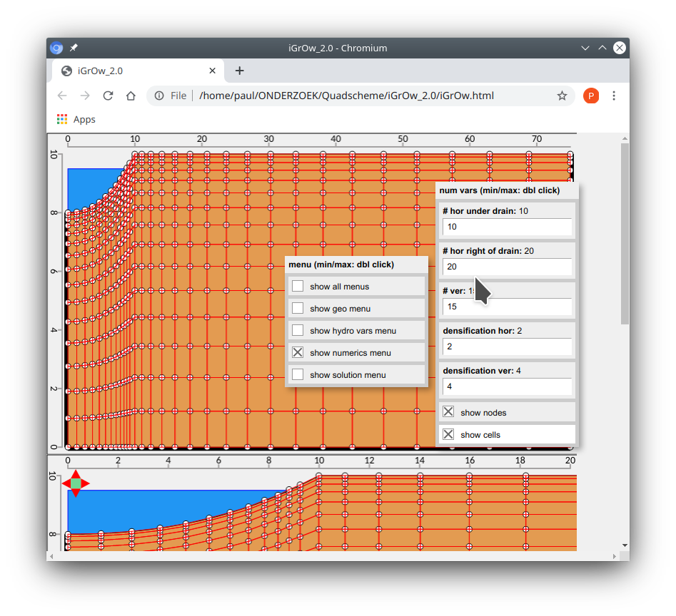A bad choice of discretization may result in a poor approximation of the drain bed as illustrated by the following image:
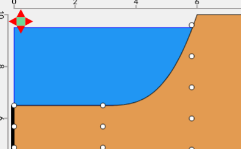
The bed from is depicted in the graph with a high resolution (using the formulas in this section), but the solution will only see the discretization nodes, and by that will not capture the slope at the right.
Once a discretization made, a numerical solution can be calculated. As the differential equations (see above) are essentially balance equations, the solving procedure tries iteratively to find head values in the nodes () such that the numerical mass balances for each node the numerical mass balance error is minimized.

The fluxes for the numerical balances are calculated in the numerical cells. The figure above shows such a typical cell () in which approximations of the fluxes are to be calculated, based on the heads () at the four corners. This is done by creating the intersection point of the diagonals and assigning to it the mean value () to it. In each of the four resulting triangles the heads can be interpolated linearly, head gradients and from this fluxes can be calculated. Combining these values for fluxes can be calculated.
Once the fluxes are calculated, balances for each node can be made by considering the four cells of which this node is a corner, as in the figure below:
The balance for the central node can now be written as:
If the node is on the border of the domain, external fluxes can be added.
The node inspector of the solution analysis allows the user to inspect the numerical values of these fluxes.
A typical step in the iterative solution consists of:
adjusting the values as the nodes such that the mass balances in the nodes are satisfied
adjusting the nodes and the cells such that they fall below the groundwater table given by the line
A result of this last adjustment is seen in the following figure:
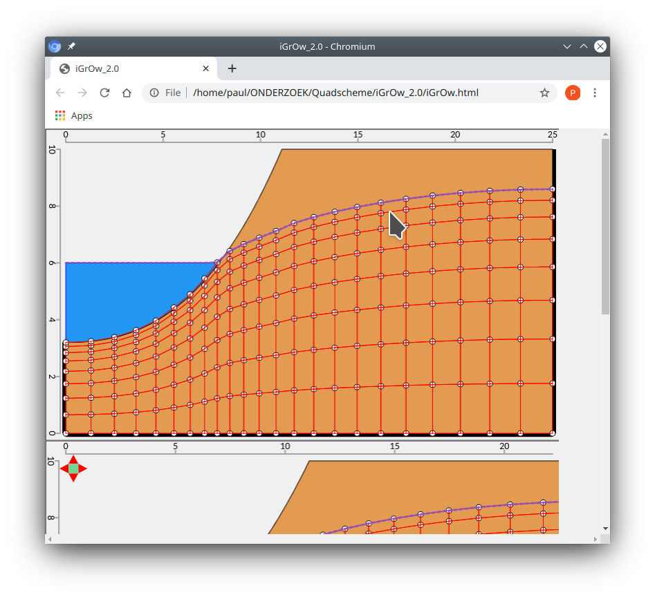If a discretization is made, one can calculate a numerical solution. To do this, open the solution-menu and hit the solve button:
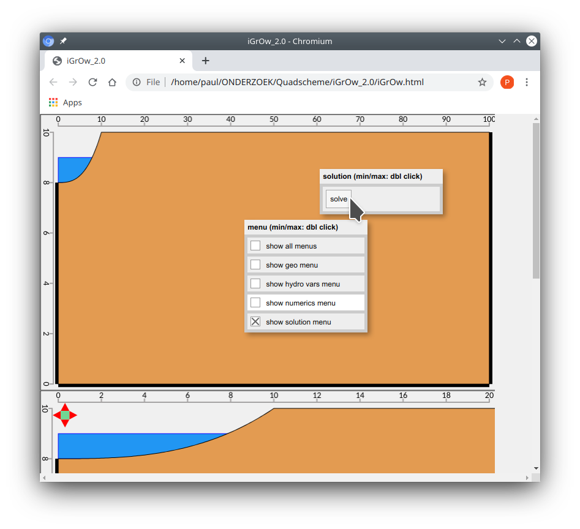Once a solution is calculated, new options appear in the solution-menu, as shown in the figure below:
Checking the “show H table” box shows the water table, that is the surface for which in the groundwater and the water level in the drain, as shown in the figure below:
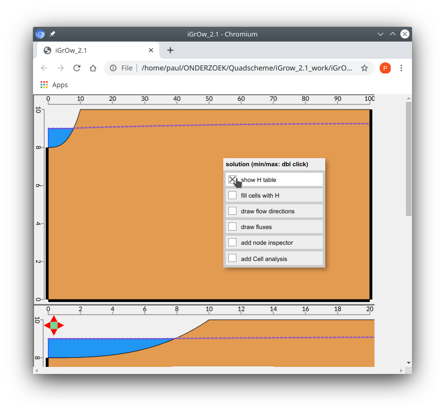The maximum and minimum value of this table are stored in the table under the names “H_min” and “H_max” respectively.
Checking this box fills the flow domain with colors representing the values of the 's. A color bar with an axis (which can be dragged to any place in the window) gives the relation between values and colors.
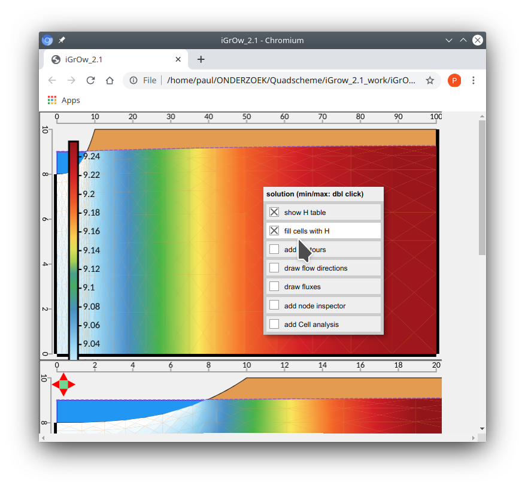Both the top (global) view and the second (local) view are filled. The same colors are used but the relation between colors and values are chosen in such a way that only the values visible in the local view are used. A new color bar adjusted to this new relation is added, as shown in the figure below:
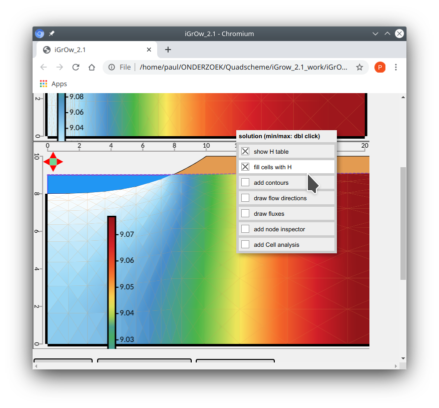The average values of these H values at the top and at the bottom are calculated and stored in the table under the names “Htop_mean” and “Hbottom_mean” respectively.
If the “fill cells with H” option in the menu is checked, an extra option “add contours” appears in the menu. When checked contour lines corresponding to the values of the color bar are added to the plot as shown in the figure below:
If the “draw flow direction” option in the solution menu is checked, arrows are drawn in the whole domain, both for global and local view, indicating the direction of flow. In this the flux size is neglected resulting in arrows all of the same length. If flux size is the point of interest, one should use the “draw fluxes” options (see section).
The following picture shows such an analysis: 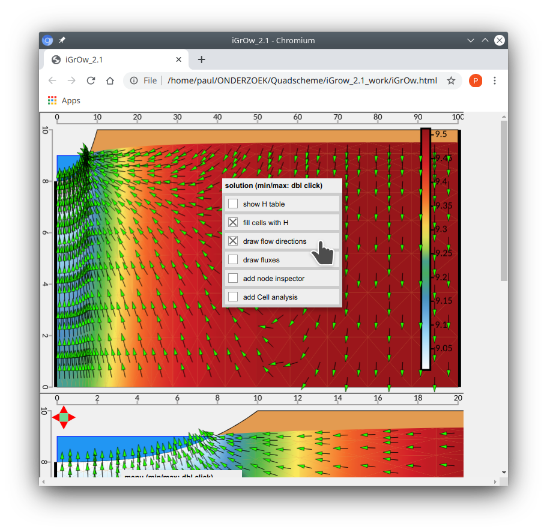
As can be seen from absence of a thick line at the bottom, the example shows a case with a base layer. For there is a net flow towards this base layer, for there is a net flow from the base layer into the system.
The flow directions plotted are the directions of the numerical approximation of the true flow directions. As in all approximations, errors do occur. In the figure below, errors of the flow directions on the vertical below the talud of the drain are clearly visible:
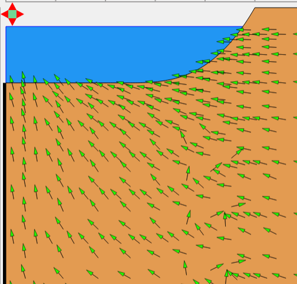
Numerical errors get smaller by choosing a finer grid of nodes (see setion) and the convergence criterium (see section).
Checking the “draw fluxes” option draw fluxes both in the top global and middle local view. The user has to select a factor to map the flux vectors (who have a different physical dimension: length/time as the pure length dimensions of the axes) onto the plot. The length of the arrows is proportional to the flux. All arrow head have the same head size. When the “dont draw small arrows” box is checked (default), arrows whose length is invisible below the head are not drawn. When unchecked, fluxes are drawn in the total domain, even if they are invisible beneath the arrowhead. Note that the same arrows are drawn in the top global and middle local view.
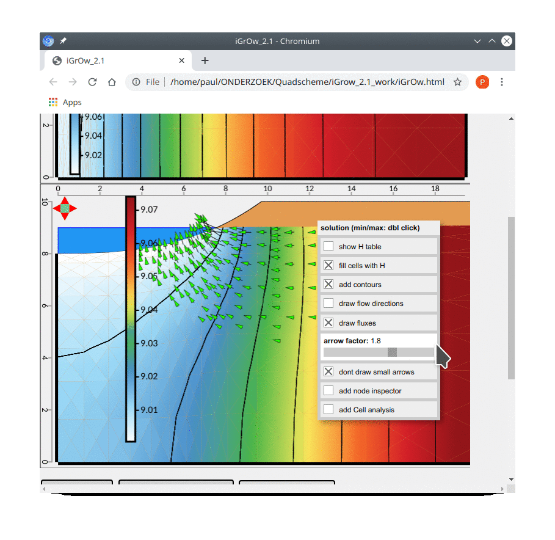If one is only interested in the direction of the flux, and not its size, one should use the “draw flow directions” options as discucced in section.
Numerical errors as discussed on flow directions (see section) do also occur here, and generally become more visible when large arrow factors are choosen.
From these fluxes the total fluxes tot the drain and over the bottom are calculated and stored in the table under the names “Q tot drain” and “Q tot base” respectively. The total recharge is also calculated and stored in the table under the name “Q tot recharge”.
The option “add node inspector” allows the user to inspect the information assembled in a node.
When checked, a yellow circle with a black line around it appears in both views. It can be dragged to any place in the domain. By dragging the pointer circle in one view, the circle in the other view will follow. Of course, by dragging the pointer in the global view to the far right can make the pointer in the middle local view invisible.
When released after dragging, the pointer will automatically move to the nearest node.
A small report of all information connected to that node appears, as can be seen in the following figure:

That report can be dragged to any place in the window. It contains the following information:
position of the node
value of
fluxes from the eight neighboring nodes (as explained in the calculation section (see section on numerical solution for definitions)
external flux (non-zero values only possible on the boundaries)
the “sum”: the remaining balance error in the node after solving
If the “add analysis” box is checked, a section on the left of the domain is analyzed as if it was a cell of a numerical model (as e.g. MODFLOW).The width of this cell can be chosen by the new menu item that appears. The right border of this cell is plotted as a yellow line. The results of the analysis are shown in a small report (that can be dragged to any place in the window) as in the following figure:
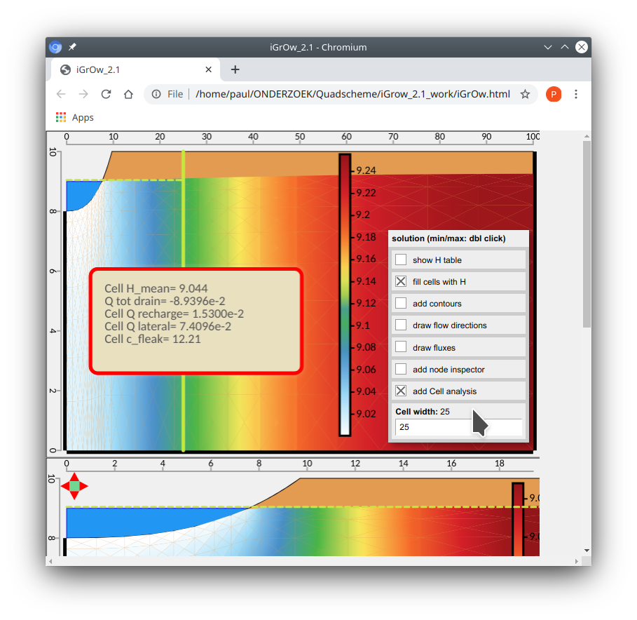This report contains the following information:
Cell H_mean: the mean value of the top nodes in the cell
Q tot drain: the total flux to the drain
Cell Q recharge: that part of the recharge that falls on the cell
Cell Q lateral: the flux over the right border of the cell
c_fleak: calculated by:
This value is chosen such that if one calculates the flux to the drain with a constant head and this resistance this would result in the modelled flux to the drain:
Note that the value of c_fleak is only representative for the current parameter values.
If the relation between and is very non-linear as in the figure above, the linear relation determined by only the current parameter values (red line) can be a poor approximation.

When the lower boundary is open the report is extended as in the following figure:
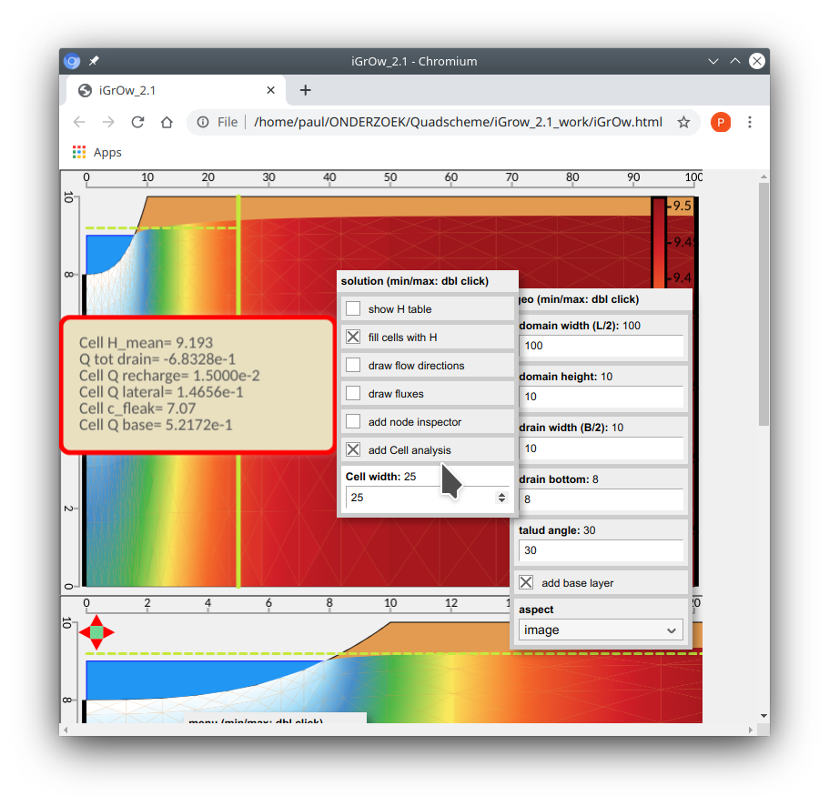The extra value in this report is:
iGrOw calculates several perimeters. They can be found in the table.
The geomtrical (dry) perimeter of the ditch was already introduced in the geometry section and is stored in the table under the name “Ow Per”, and is defined bye the following figure:
The open water wetted perimeter is defined as that part of the perimeter that is in contact with the water in the ditch. It is stored in the table under the name “Ow Wet Per”. Moreover the width of the water table is calculated and stored in the table under the name “Ow Wet Width”. The following figure illustrates these concepts:

The groundwater wetted perimeter is defined as that part of the perimeter that is in contact with the water groundwater. It is stored in the table under the name “Gr Wet Per”. The following figure illustrates this concept in the case of a seepage psease:
If there is no seepage phase or the open water is infiltrating the groundwater, the groundwater wetted perimeter equals the open water wetted perimeter as illustrated by the following two figures:
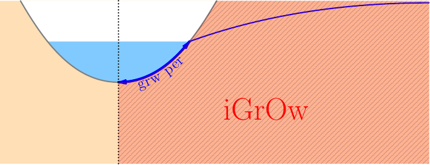 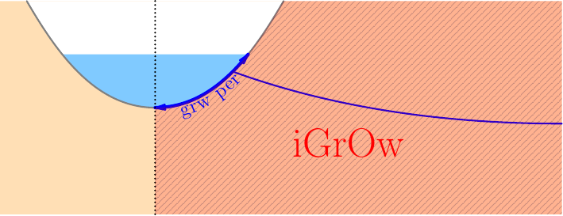The lowest part of the window shows a table-view in terms of numbers of the model under consideration. Both input numbers and result numbers are stored in this table. Any change in these numbers of the current model is immediately stored in the topline of the table, called the “active storage” as shown in the following figure:
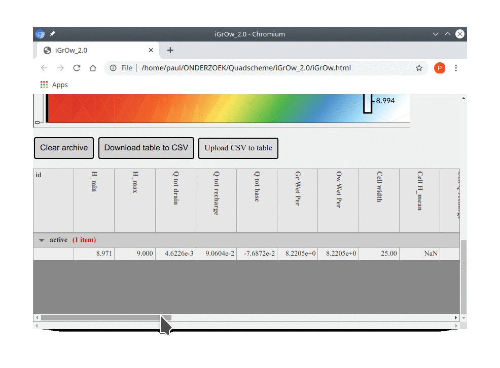The table is (usually) much wider than the browser window. One should use the horizontal scroll bar to view all the variables. Name of the variables are as introduced above, input variables have the same name as in the menus. Variables that do not receive a value in the current model (e.g. because there is no base layer or no cell analysis is done) get the value “NaN” (not a number).
Often one wants to compare to (or more) model runs. For this the table can be used. By clicking on the active row, the user has the option to archive the active row. If the user accepts this, the now active row is copied in another part of the table called “archive”. Changing the model parameters and rerun the model results in another active row. The results of this active row can then be compared to the archived one.
The following figure illustrates this: 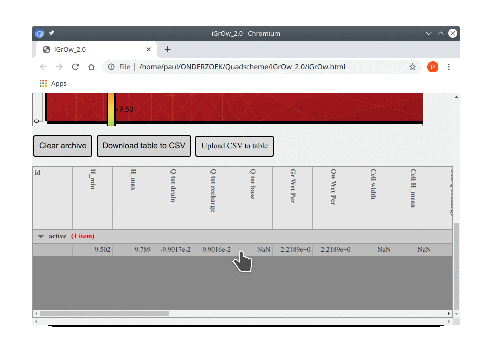
In this example the first model used values . The results of this model were archived. Changing the values , rerunning the model an comparing the active row to the archived row shows that the maximum ground water level went down form 9.789 to 9.619.
Changing model parameters, running the model, archiving the results end in general in a table with several rows. One can of course compare the output numbers of the different results as stored in the table. But it may also be the case that one wants to review the plots corresponding to an archived row. This can be done by clicking on an archived row. The user has then the option to accept that this archived row becomes active, including all the graphical plots.
The following figure illustrates this:
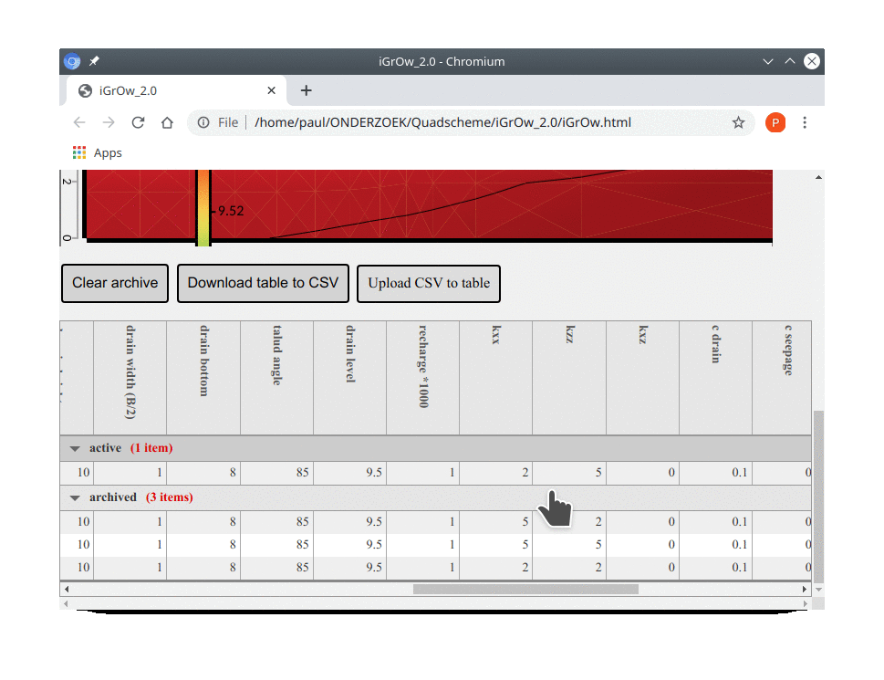After collecting a lot of runs in the table archive, one may wish to continue the analysis outside iGrOw.html, for instance in a spreadsheet. For this, one can hit the button “Download table to csv”. A csv file containing all the rows and columns of the table will then be saved on your computer. Most browsers will save this (for security reasons) only in the local Downloads folder. Some browsers allow to change the name of that file, some give a default name.
The figure below shows such a download on a Chromium browser. The default name is then “data.csv” and it appears in lower part of the browser. This file can be downloaded and analyzed in any spreadsheet.
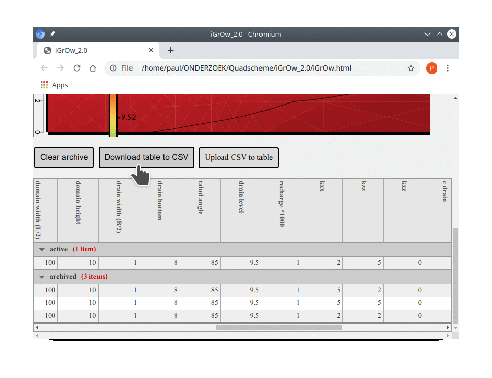The manual discussed until now how models could be made interactively (through menus) and stored in tables. To run many cases, the interactive approach may be too cumbersome.
For that reasons, iGrOw allows also to define all these cases in a csv file and upload it in _iGrOw. iGrOW will run all these cases and store them in a table.
For this procedure, one should first make a csv file with all input variables as column names and where the rows correspond to the cases.
Remember: column names are identical to those used in the menus: “iGrOw width (L/2)”, “domain height”, “drain width (B/2)”, “drain bottom”, “talud angle”, “drain level”, “recharge *1000” , “kxx”, “kzz” ,“kxz”, “c drain”, “c seepage”, “c base”, “H base”,“# hor under drain”, “#hor right of drain”, “# ver”, “densification hor”, “densification ver”, “Cell width”
To help the user in this, a spreadsheet template for a spreadsheet file by which such a csv file can be make and an example are provided in the distribution.
The following figure shows the “_iGrOwInputTemplate.xlsx”:
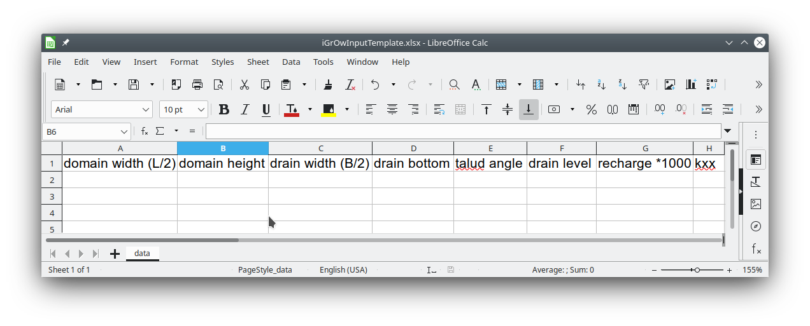The following figure shows the “_iGrOwInputExample.xlsx” made by this template:
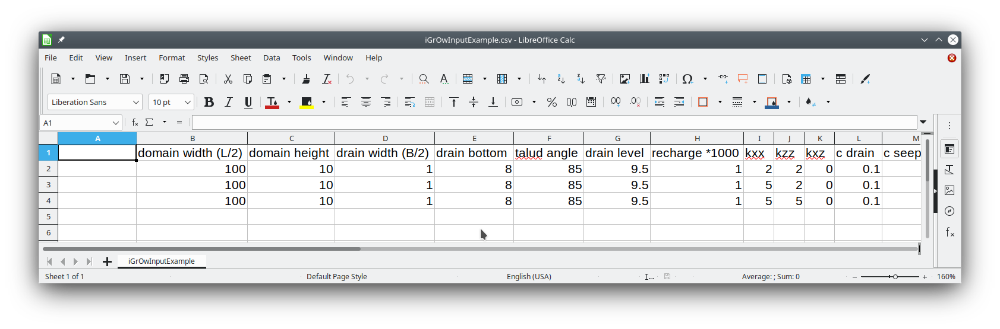the same file, but now scrolled to columns more to the right:
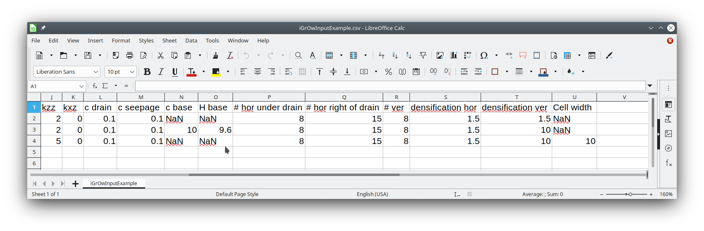In this laste figure the use of “NaN” signal options one does not want to use:
Such a spreadsheet can be save as a csv file and uploaded into iGrOw as in the following illustration:
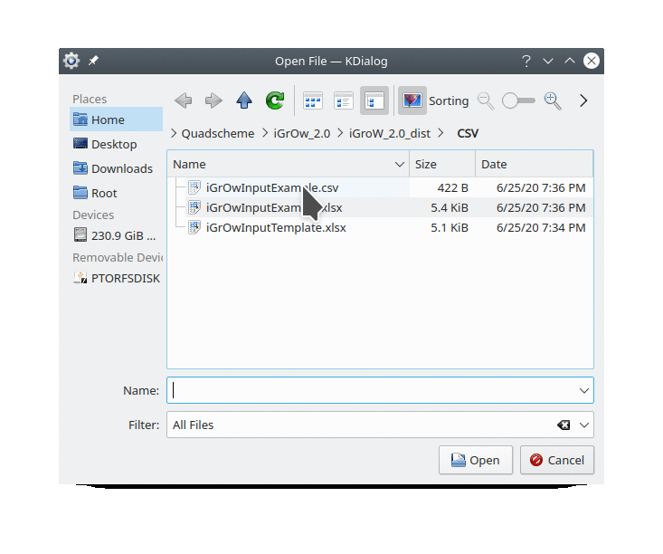The sections above discussed values of variables that can be interactively set through the menu options.
The “iGrOw.html” uses some other values that can be changed if wanted. The are collected in a javascript file (which can be opened and edited by any editor) called “iGrOwdefaultsettings.js” that can be found the “script folder”. The following image shows this file as provided in the zip-version:

The first three objects provide the default values by which “iGrOw.html” opens. The fourth collects numbers that are used in the solution procedure:
omega: classical relaxation factor used in the iterative solution of the equations. Larger numbers can result in a faster solution, but can also result in non-convergence.
theta: relaxation factor used in the part of the solution that handles the base flow. Larger numbers can result in a faster solution, but can also result in non-convergence.
maxiter1: maximum number iterations in the solutions of the main part of the equations
maxiter2: maximum number iterations in the solutions of base part of the equations
maxHchange: stop criterion for heads: if changes in H-values are smaller than this number, the iteration in the main solution procedure stops
maxQchange: stop criterion for fluxes: if changes in Q-values of the base values are smaller than this number, the iteration in the solution procedure that handles the base fluxes stops
Any of these numbers can be changed. If an altered file is saved in the script folder, it will be used the next time the “iGrOw.html” is opened in a browser.